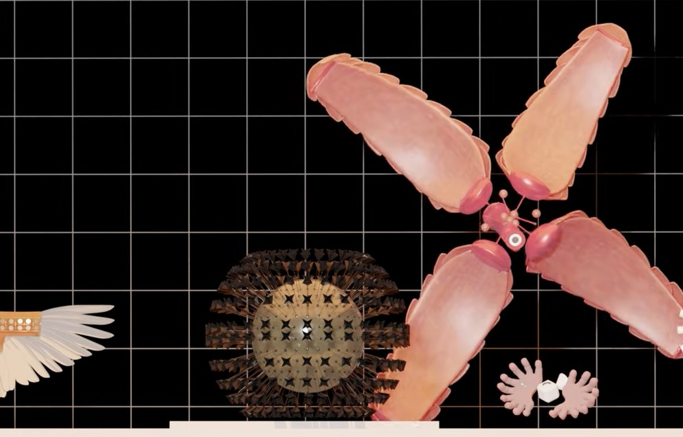
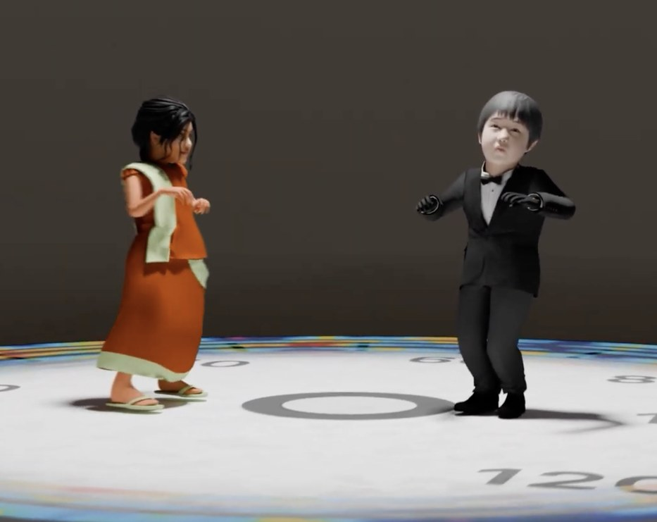
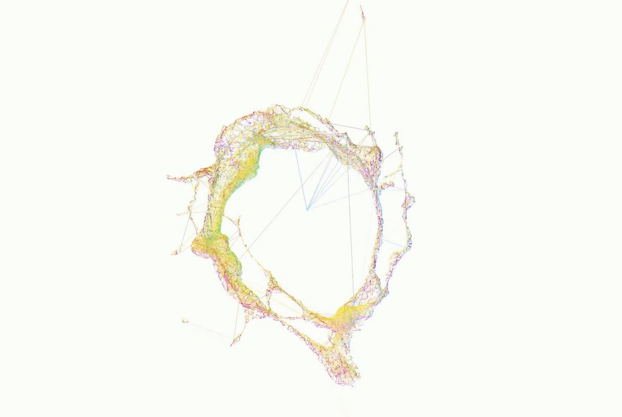
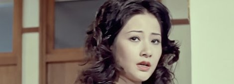
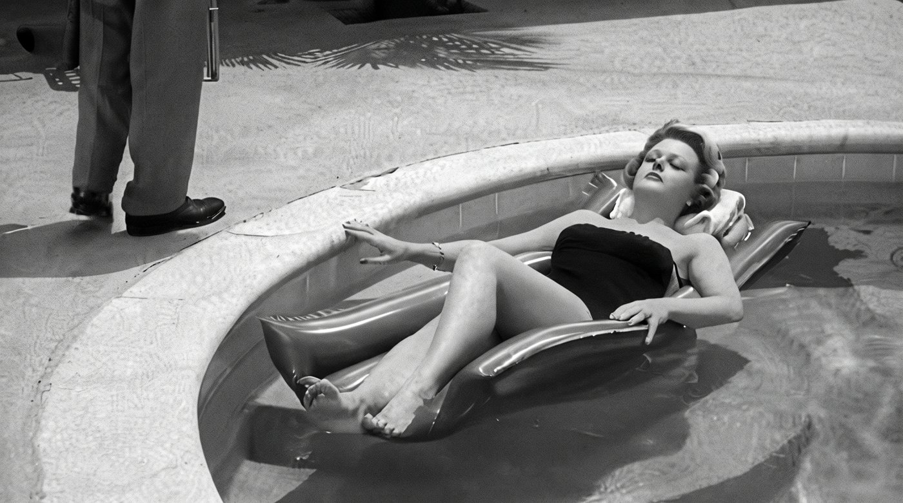
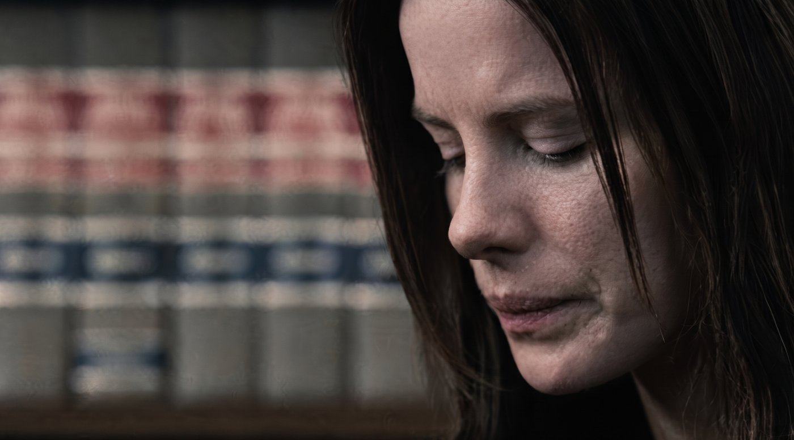

그대는 무엇이든 될 수 있다안동권

오디세이 큐브김예성

아스달 연대기이효성

한국인 만들기김민지

Sisyphus' Light Ascent전아현

무제전진

꼼꼼한 낙서천지율

두 개의 입, 하나의 노래윤소희

오후의 조준선배준호

낙하하는 약속들조현석

Westward FacesNathan Brooks

잔상 아카이브권나연

창가에 남은 소문유하은

00:00:00:14노승민

Noon on the SurfaceClara Jensen

닫힌 서가의 목소리홍지원